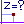
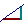
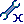
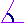
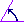
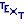
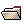
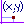

Atajos de teclado
Atajos de teclado.
|
F1 |
Lanza la ayuda de MathGraph32 si está disponible. Para que ello ocurra el archivo de ayuda debe estar presente en el directorio que contiene el jar de MathGraph32. Este archivo debe tener por nombre MathGraph32Helplan.htm donde LAN representa la lengua utilizada. Cuando la lengua utilizada es el Español, este archivo se nombra a MathGraph32Esp.htm. |
|
F2 |
Activación o desactivación de la ayuda visual para la creación de objetos. |
|
F3 |
Activación o desactivación de nominaciones automáticas. |
|
F5 |
Lanza el historial de la figura. |
|
F6 |
Visualiza en una caja de diálogo todos los objetos numéricos existentes. |
|
F7 |
En la implementación de una construcción y en la elección de los objetos fuentes gráficos, abre una caja de diálogo dando la información sobre la construcción utilizada. |
|
F8 |
Activa la herramienta de ejecución de una macro (ícono ). |
|
F9 |
Activa la herramienta precedentemente empleada en el caso donde la última herramienta utilizada tenía una acción única (por ejemplo una herramienta de medida). |
|
F10 |
Activa el menú de la figura. |
|
Suppr |
Activa la herramienta de supresión de un objeto gráfico (). |
|
Ctrl + A |
Medida del afijo complejo de un punto en un referencial (ícono ). |
|
Ctrl + B |
Creación de un punto definido por su afijo complejo de un punto en un referencial. |
|
Ctrl + C |
Copiar la figura en el portapapeles. |
|
Ctrl + D |
Creación de una recta por su coeficiente director (ícono ). |
|
Ctrl + E |
Creación de un cálculo real. |
|
Ctrl + May + E |
Creación de un cálculo complejo. |
|
Ctrl + F |
Creación de una función numérica de una variable real. |
|
Ctrl + G |
Creación de una función numérica compleja de una variable compleja. |
|
Ctrl + I |
Modificación de un objeto numérico (ícono ). |
|
Ctrl + L |
Creación una visualización de valor ligada a un punto. |
|
Ctrl + K |
Creación de un comentario ligado a un punto. |
|
Ctrl + M |
Creación de una marca de ángulo no orientado (ícono ). |
|
Ctrl + N |
Creación de una marca de ángulo orientado (ícono ). |
|
Ctrl + J |
Creación un comentario libre (ícono ). |
|
Ctrl + O |
Abertura de un archivo (ícono ). |
|
Ctrl + P |
Impresión de la figura (ícono ). |
|
Ctrl + S |
Guardar la figure en curso (ícono ) . |
|
Ctrl + V |
Creación de una variable. |
|
Ctrl + Ins |
Creación de un punto definido por sus coordenadas en un referencial (ícono ) |
|
Ctrl + Z |
Anulación de la última acción sobre la figura. |
|
Ctrl + Y |
Anulación de la última anulación. |
Copyright © <2009>, <Yves Biton>
Created with the Freeware Edition of HelpNDoc: Free CHM Help documentation generator